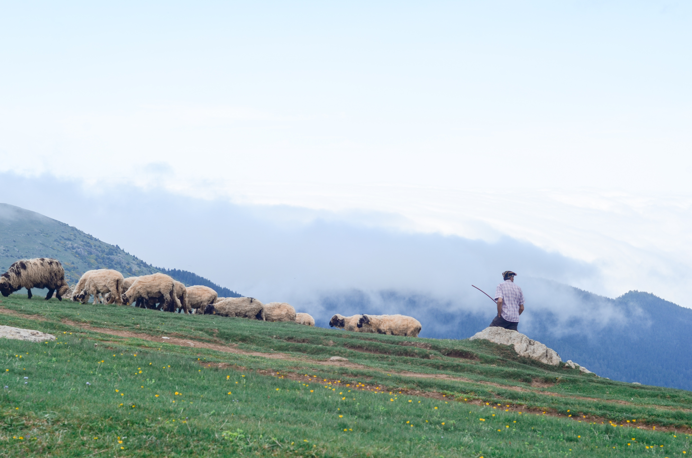
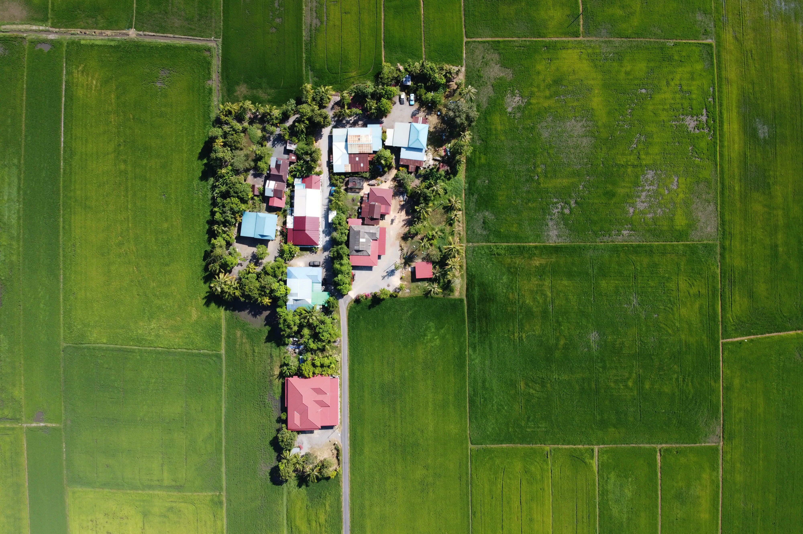
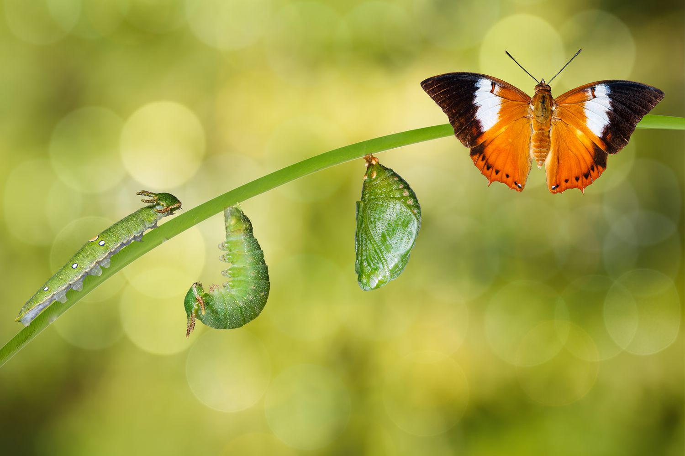

Mai putine emisii de carbon
In comparatie cu fermele de animale clasice, cresterea insectelor implica un consum de energie redus si absenta emisiilor de gaze rezultate din zootehnia uzuala.

Suprafata utilizata redusa
Suprafata necesara cresterii insectelor este inzecit mai mica decat cea necesara culturilor agricole.

Un ciclu de crestere mai rapid
In medie, insectele ajung din stadiul de larva pana la maturitate intr-o perioada de aproximativ 21 de zile. O durata semnificativ redusa fata de perioada de productie a furajelor clasice.

Furaj supra-calitativ
In urma procesului de prelucrare, furajele rezultate din insecte prezinta caracteristici calitatve superioare celor traditionale. Acestea fiind bogate in proteine, minerale si alti micronutrienti ce faciliteaza dezvoltarea armonioasa a consumatorilor.